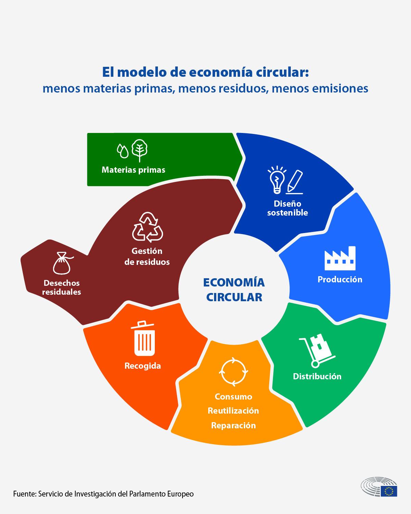

ECONOMIA CIRCULAR:
NO NECESITAS
PRODUCIR PARA CONSUMIRspan>
“La tierra no la heredamos de nuestros padres, la pedimos prestada a nuestros hijos”
La economía circular consiste en prolongar la vida útil de todos los productos y,
al
final de su vida útil, reutilizar y reciclar las materias primas; de esta manera alteraremos lo menos
posible los ciclos naturales.
Esta idea nació en los años 60, pero no fue hasta el 2010 que se estableció como un paradigma. Hoy en
día,
la economía circula se encuentra en fase de madurez y ha sido implementada por muchas de las empresas
más
previsoras y conscientes de la sostenibilidad.
Los principios de la economía circular se basan en las conocidas 3 R:
Reducir: Disminuir el consumo de recursos y energía que resulta vital para minimizar
el
consumo
de materias primas y la generación de residuos.
Reciclar: Dar una segunda vida a las materias primas de un objeto, una
pieza
de maquinaria
o un
edificio es el camino a seguir y
se aplica a todos los niveles, desde la botella individual hasta la gran fábrica.
Reutilizar: Transformar los residuos de un producto que ha llegado al
final
de su vida
útil no se
considera un residuo sino un
recurso.
Uno de los retos más urgentes que enfrenta la economía circular es el que tiene que ver con la
producción
alimentaria y los residuos, dado que los alimentos, sobre todo a nivel industrial y negocios vinculados
a
ellos, son desechados en cantidades enormes, principalmente en país más ricos.

¿Por qué tenemos que cambiar a una economía circular?
Para proteger el medio ambiente. La reutilización y
el reciclaje de productos ralentizan el uso de recursos naturales y ayudan a limitar la pérdida de
biodiversidad.
Reducir la dependencia de materias primas. Varias materias primas cruciales son
finitas
y, como la
población mundial crece, la demanda también
aumenta.
Crear empleo y ahorrar dinero a los consumidores.
La transición hacia una economía más circular podría aumentar la competitividad, estimular la
innovación,
impulsar el crecimiento económico y crear empleo.
La Unión Europea produce más de 2100 millones de toneladas de residuos. Al actualizar su
legislación
sobre
la gestión de residuos, la UE pretende promover un cambio hacia un modelo sostenible, la economía
circular.